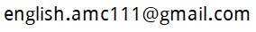
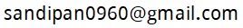
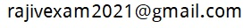
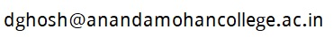

English department at Ananda Mohan College, University of Calcutta, Kolkata
The information on this page was last updated on 20 December 2021.
Official website of Ananda Mohan College is http://anandamohancollege.ac.in
List of teachers
- Shri Nripendra Narayan Singh, M.A.
- Shri Debashish Raychaudhuri, M.A., M.Phil., Email address: 
- Shri Sandipan Sen, M.A., Ph.D., Email address: 
- Shri Rajiv Kumar Nasker, M.A., M.Phil., Email address: 
- Shri Dibyajyoti Ghosh, M.A., Ph.D., Email address: 